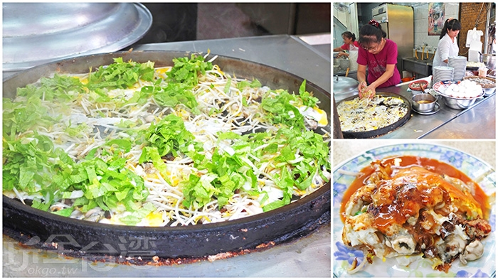

圖片 |
標題 |
說明 |
地址 |
 |
金德春捲 |
金得春捲創立於民國43年，邁入六十年的高齡，一間小小的春捲店，傳承很古早的好滋味。 包好的春捲會放上熱平底鍋煎烤一下，春捲外皮看起來焦黃色的， 這樣的作法讓春捲吃起來微微酥脆，焦香氣十足 |
中西區民族路三段19號 |
|  |
石精臼蚵仔煎 |
這裡的蚵仔煎非常肥美，特別的是還加進了豆芽菜和祖傳肉燥提香， 若您是蚵仔煎美食愛好者，一定要來嚐鮮看看。 蚵仔煎被滿載的配料堆疊成超厚一份的份量真的夠多， 幾乎每口都能吃到青菜和蚵仔，外層煎到微微焦香，蛋香隱隱約約， 淋上一層帶甜又帶鹹的自製醬料 |
中西區國華街三段182號 |
 |
韋家乾麵 |
雖然看似不太顯眼的小麵攤，卻已經成為許多人來台南必吃的美食小吃之一， 這可是大導演李安從小吃到大、念念不忘的古早味麵攤。 而李安的老家就在這附近，每次回台南都會來這裡吃上一碗陽春麵， 因為新聞報導和美食節目採訪，使得這間店的人氣上升爆衝。
|
東區前鋒路110號 |
 |
蔡家蚵嗲 |
以自製的油炸麵糊包裹所有食材後，放入每日更換的熱油中炸，炸出酥脆味美的蚵嗲。 熱騰騰的金黃色粉皮一口咬下發出“卡滋”脆聲，鹹香於口中散開。 高麗菜、青蔥等餡料將蚵嗲裡層塞超滿， 不過蔬菜較為鬆散，一咬容易散出來，油炸後的油膩感不會很重， 反而是各式蔬菜與肥美蚵仔的甜味濃郁飄香，不用再加醬料本身就很夠味。
|
北區公園路453號 |
 |
富盛號碗粿 |
碗粿的美味在於店家先調好味後再蒸，將古早香味完全鎖在碗粿裡， 吃得到肉燥、豬肉、蝦仁這些提味內餡，料多實在！ 加了薑絲的魚羹湯，跟碗粿搭配根本是美食界的黃金搭檔！ |
中西區民族路三段11號 |